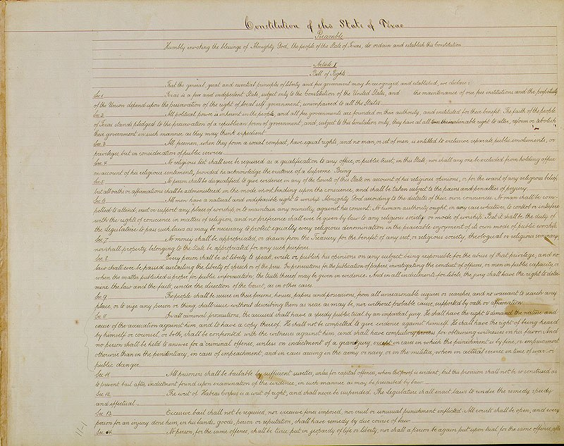
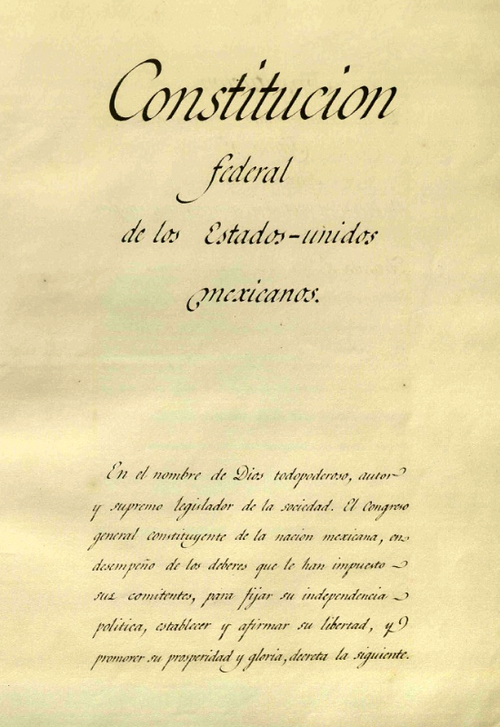
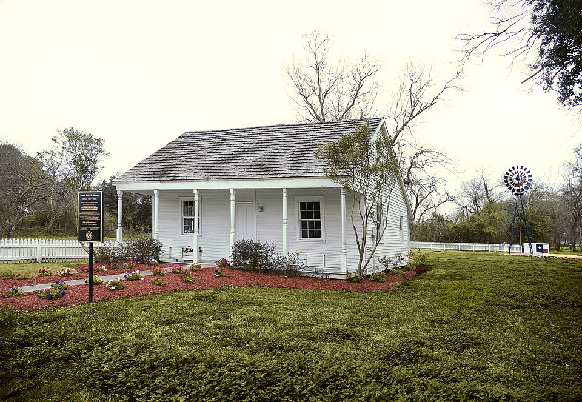
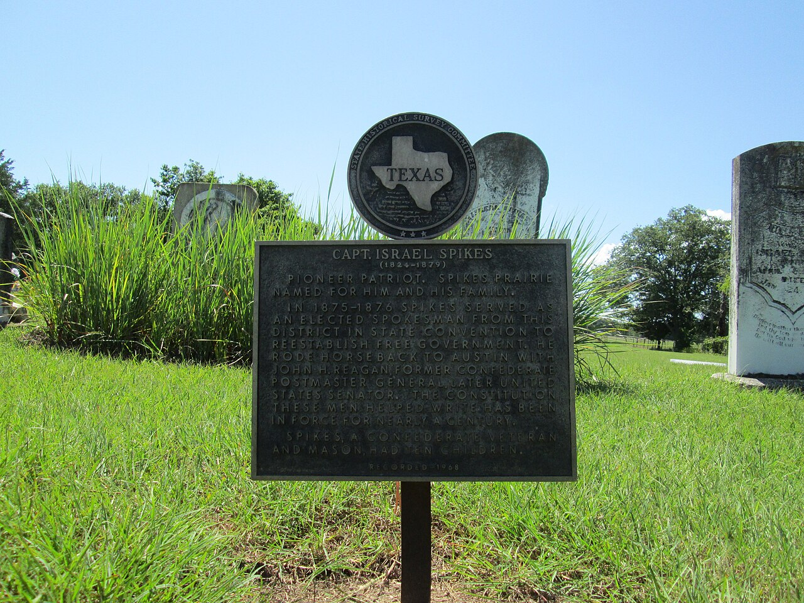
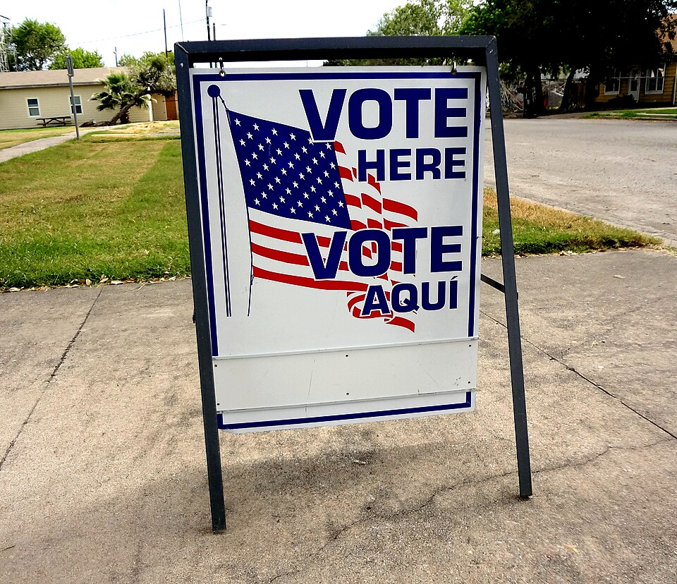

🏛️ Chapter 2: The Texas Constitution - Trailblazer Trek
⏱️ 0:00 |
Score: 0 | Level: Explorer
📜 The Texas Constitution
Journey Through Texas' Constitutional History
⭐
🤠 Welcome, Future Texas Constitutional Scholar!
In this interactive journey, you'll explore the fascinating evolution of Texas' constitutional history, from its days under Mexican rule through its current constitution. Discover how Texas transformed from a Mexican state to an independent republic to a U.S. state, and learn about the documents that shaped our unique political identity.
📊 Your Progress
0%
📚 Chapter Sections
1
Introduction & Constitutional Foundations
Learn what a constitution is and why Texas has had so many different constitutions throughout its history.
🏆 240 points available
2
Mexican Era Constitutions (1824-1827)
Explore Texas under Mexican rule and the constitutions that governed early Texas settlers.
🏆 240 points available
3
Independence & Early Statehood (1836-1845)
Discover the constitutions of the Republic of Texas and its transition to U.S. statehood.
🏆 245 points available
4
Civil War & Reconstruction (1861-1869)
Examine how the Civil War and Reconstruction shaped Texas' constitutional development.
🏆 240 points available
5
The Current Constitution of 1876
Understand the constitution that still governs Texas today and its unique features.
Welcome to your exploration of Texas' constitutional history! Texas has a unique story among American states, having been governed by multiple constitutions that reflect its journey from Mexican territory to independent nation to U.S. state.

Texas has been governed by seven different constitutions since 1824 — more than almost any other state. Each one reflects a dramatic political transformation, from Mexican territory to independent republic to Confederate state to the current 1876 constitution.
Source: Wikimedia Commons / Public Domain
Constitution
A body of fundamental principles or established precedents according to which a state or other organization is acknowledged to be governed. It establishes the structure of government, defines powers and limitations, and protects individual rights.
🤔 Click to discover: Why has Texas had so many constitutions?
Texas' Unique Constitutional Journey:
Between 1824 and 1876, Texas experienced dramatic political changes
Texas was part of Mexico (1824-1836)
An independent republic (1836-1845)
A state in the Confederate States (1861-1865)
A state in the United States (1845-1861, 1865-present)
Each transition required new founding documents to legally establish Texas and define the scope and powers of its government.
Learning Objectives for This Chapter:
Define what a constitution is and its purpose
Discuss the various constitutions that have governed Texas
Describe the current Texas Constitution of 1876
Understand how Texas' unique history shaped its constitutional development
📊 Click to explore: Key Functions of a Constitution
What Does a Constitution Do?
Establishes Government Structure: Defines branches of government and their relationships
Allocates Powers: Specifies what government can and cannot do
Protects Rights: Guarantees individual freedoms and liberties
Sets Procedures: Outlines how laws are made and changed
Defines Citizenship: Establishes who belongs to the political community
Timeline of Texas Constitutions
1824
Federal Constitution of the United Mexican States
1827
Constitution of Coahuila and Texas
1836
Constitution of the Republic of Texas
1845
Constitution of 1845 (Statehood)
1861
Constitution of 1861 (Confederate)
1866
Constitution of 1866 (Post-Civil War)
1869
Constitution of 1869 (Reconstruction)
1876
Current Texas Constitution
What distinguishes Texas from other U.S. states in terms of its constitutional history?
It has the oldest constitution
Its unique history as an independent nation and multiple political transitions
It has never changed its constitution
It doesn't have a state constitution
🎯 Click to learn: Why Understanding Constitutional History Matters
The Importance of Constitutional Knowledge:
Civic Engagement: Understanding your rights and responsibilities as a citizen
Historical Context: Appreciating how past events shape current governance
Political Participation: Making informed decisions in elections and policy debates
Legal Framework: Knowing the foundation of Texas law and government
The Texas Constitution affects everything from education funding to property rights to criminal justice!
What is the primary purpose of a constitution?
To create political parties
To establish international treaties
To establish fundamental principles of governance and protect rights
To collect taxes
How many constitutions has Texas operated under since 1824?
Three
Five
Eight
Ten
🏛️
Section 2: Mexican Era Constitutions (1824-1827)
Constitutional government in Texas began under Mexican rule. Understanding these early constitutions helps explain the tensions that eventually led to Texas independence.

The Mexican Constitution of 1824 — the first constitution to govern Texas. It established Mexico as a federal republic, but made Catholicism the official religion and gave Congress, not the courts, final authority to interpret the constitution.
Source: Wikimedia Commons / Public Domain
Federal Constitution of the United Mexican States (1824)
The first constitution to govern Texas, patterned after the U.S. Constitution but more closely resembling the Spanish Constitution of 1812. It established Mexico as a federal republic with states having significant autonomy.
📜 Click to explore: Key Features of the 1824 Mexican Constitution
Important Provisions:
Religion: Catholicism was the official state religion, supported by public treasury
Executive: President and Vice President elected for 4-year terms by state legislatures
Congress: Two houses meeting annually from January 1 to April 15
Judiciary: Supreme Court with 11 judges and an attorney general
States: Required to separate executive, legislative, and judicial functions
Congress, not the courts, was the final interpreter of the constitution - a major difference from the U.S. system!
Texas Under Mexican Rule:
Texas was not its own state initially. It was combined with Coahuila to form the state of "Coahuila y Tejas" because Texas didn't have enough population to be a separate state under Mexican law.
Constitution of Coahuila and Texas (1827)
The state constitution for Coahuila y Tejas, which took over two years to draft. It established local governance while Texas remained part of the larger Mexican federal system.
🏛️ Click to discover: Unique Features of the 1827 Constitution
Notable Provisions:
Representation: Texas only received 2 of 12 legislative seats despite its large territory
Slavery: Forbidden after promulgation; no imports after 6 months
Capital: Located in Saltillo, hundreds of miles from most Texas settlements
Language: Laws published only in Spanish, which few Anglo-Texans could read
Rights: Guaranteed liberty, security, property, and equality to citizens
⚖️ Click to learn: Sources of Tension Under Mexican Rule
Why Anglo-Texans Were Dissatisfied:
Religious Requirements: Had to be Catholic (or convert)
Language Barriers: All legal proceedings in Spanish
Distance from Government: Capital in Saltillo was far from Texas
Under-representation: Only 2 of 12 seats despite growing population
No Trial by Jury: Promise never implemented
Slavery Restrictions: Conflicted with many settlers' economic plans
These tensions led to the Convention of 1833, which proposed separate statehood for Texas!
What was the official religion under the Mexican Constitution of 1824?
Protestant Christianity
Roman Catholicism
No official religion
Multiple religions allowed
How many legislative seats did Texas have in the Coahuila y Tejas legislature?
2 out of 12
6 out of 12
4 out of 12
8 out of 12
What was a major source of tension for Anglo-Texan settlers?
Too much representation in government
The capital was too close
Laws were only published in Spanish
Taxes were too low
⭐
Section 3: Independence & Early Statehood (1836-1845)
The Texas Revolution brought independence and the need for a new constitution. This period saw Texas transform from a Mexican state to an independent republic and finally to a U.S. state.
Washington-on-the-Brazos — where Texas delegates drafted the Republic's constitution in just 15 days while Santa Anna's cavalry approached. The document established Texas as an independent nation with a strong president and a bill of rights.
Source: Wikimedia Commons / Public Domain
Constitution of the Republic of Texas (1836)
The first Anglo-American constitution to govern Texas, drafted in just 15 days at Washington-on-the-Brazos while Mexican cavalry threatened. It established Texas as an independent nation.
🌟 Click to explore: Features of the Republic's Constitution
Key Elements (borrowed from U.S. Constitution):
Brevity: Less than 6,500 words (remarkably short)
Three Branches: Separation of powers with checks and balances
Bicameral Legislature: Senate and House of Representatives
Strong Executive: President with powers similar to U.S. President
Bill of Rights: Protected individual freedoms
Slavery: Allowed and protected
From Spanish-Mexican Law: Community property, homestead protections, and debtor relief!
Land Rights - Critical Issue:
The 1836 Constitution heavily emphasized land rights because land was the main attraction for immigrants. It guaranteed:
Head of family: "one league and one labor of land" (4,605 acres)
Single men over 17: "third part of one league" (1,476 acres)
Protection of orphans' land rights
📅 Click to discover: The Brief Life of the Republic
Texas as an Independent Nation (1836-1845):
Lasted nearly 10 years
Had its own president, Congress, and military
Established diplomatic relations with other nations
Faced constant threats from Mexico
Struggled with debt and defense costs
Fun Fact: Texas is the only U.S. state that was once an independent nation!
Constitution of 1845
Created when Texas joined the United States. Almost twice as long as the Republic's constitution, it established Texas as a U.S. state while preserving many unique Texas traditions.
The Lone Star Flag — Texas is the only state that was once an independent nation. When it joined the Union in 1845, Daniel Webster called its new constitution "the best of all state constitutions" for its innovative homestead protections and women's property rights.
Source: Wikimedia Commons / Public Domain
🏛️ Click to learn: Innovations in the 1845 Constitution
Notable Features:
Homestead Protection: First state to protect family homes from forced sale (200 acres rural, $2,000 urban)
Women's Property Rights: Recognized separate ownership by married women - very progressive!
Community Property: Continued Spanish tradition of shared marital property
Education: Set aside 10% of tax revenue for public schools
Debt Limit: Limited state debt to $100,000 (except for war)
Daniel Webster called it the best of all state constitutions!
Where was the Constitution of the Republic of Texas drafted?
San Antonio
Washington-on-the-Brazos
Houston
Austin
What made the 1845 Constitution innovative for women's rights?
Women could vote
Women could hold office
Married women could own separate property
Women could serve on juries
How long did the Republic of Texas last?
5 years
Nearly 10 years
15 years
20 years
⚔️
Section 4: Civil War & Reconstruction (1861-1869)
The Civil War and Reconstruction era brought dramatic constitutional changes to Texas, with three different constitutions in just eight years reflecting the turbulent politics of the time.

Reconstruction in Texas — three constitutions in eight years (1861, 1866, 1869) reflected the chaos of secession, defeat, and federal military occupation. The radical 1869 constitution under Governor E.J. Davis provoked such backlash that it shaped the restrictive 1876 constitution still in use today.
Source: Wikimedia Commons / Public Domain
Constitution of 1861 (Confederate Constitution)
After Texas seceded from the Union, the Secession Convention amended the 1845 Constitution to align Texas with the Confederate States of America.
🏴 Click to explore: Changes in the Confederate Constitution
Key Modifications:
Changed "United States" to "Confederate States" throughout
Eliminated provisions for slave emancipation
Made freeing slaves illegal
Required loyalty oaths to the Confederacy
Made amendments easier to pass
What it DIDN'T do: Did not legalize the African slave trade or take extreme states' rights positions - it was surprisingly conservative!
Constitution of 1866 (Presidential Reconstruction)
Created to comply with President Andrew Johnson's lenient Reconstruction requirements and rejoin the Union.
📋 Click to discover: Features of the 1866 Constitution
Major Changes:
Governor: Term increased to 4 years, salary to $4,000, given item veto power
Legislature: Required to be white men with 5-year Texas residency
Supreme Court: Increased from 3 to 5 judges
Education: Created separate schools for black children
Amendment Process: Required 3/4 legislative majority and governor's approval
Rejected by Congress as too lenient on former Confederates!
Constitution of 1869 (Radical Reconstruction)
Created under military supervision to comply with Congressional Reconstruction. The most controversial of all Texas constitutions.
⚖️ Click to learn: The Radical Constitution of 1869
Dramatic Changes:
Centralized Power: Governor could appoint judges and many officials
Voting Rights: Extended to African Americans
Education: Compulsory school attendance, state superintendent
Elections: 4-day elections at county seats only
Police: State police force under governor's control
Legislature: Annual sessions (not biennial)
Many Texans saw this as oppressive federal control, leading to demands for a new constitution once Reconstruction ended.
The Reconstruction Controversy:
The 1869 Constitution remains controversial. Critics saw it as:
Too centralized and powerful
Imposed by outsiders
Too expensive (higher taxes)
Supporters argued it:
Established public education
Protected civil rights
Modernized state government
What major change did the 1861 Constitution make regarding slavery?
It gradually abolished slavery
It made freeing slaves illegal
It limited slavery to certain counties
It made no changes to slavery laws
Which constitution gave the governor the most power?
1836
1845
1866
1869
What was a positive legacy of the 1869 Constitution?
Established public education system
Reduced taxes significantly
Eliminated state government
Returned to Mexican rule
📜
Section 5: The Current Constitution of 1876
When Democrats regained control of Texas in 1873, they immediately began working on a new constitution to replace the hated 1869 document. The result is the constitution that still governs Texas today - though heavily amended!

The Texas Constitutional Convention of 1875 — delegates wrote a constitution designed to severely limit government power in direct reaction to the Reconstruction-era abuses of Governor E.J. Davis. Their motto: "That government is best which governs least."
Source: Wikimedia Commons / Public Domain
Constitution of 1876
Texas' current constitution, designed to restrict government power and return control to the people. It is the second-longest state constitution in America (after Alabama) with 17 articles and over 500 amendments.
🔍 Click to explore: Key Principles of the 1876 Constitution
Restricting Government Power:
Legislative Sessions: Changed from annual to biennial (every 2 years)
Plural Executive: Divided executive power among multiple elected officials
Balanced Budget: Required - state cannot spend more than it collects
Elected Judges: Shifted from appointed to elected by the people
Amendment Process: People vote on all constitutional changes
Low Salaries: Keep government officials from getting too comfortable
The framers' motto: "That government is best which governs least!"
Structure of the Current Constitution:
Preamble: Brief introduction
17 Articles: Covering everything from the Bill of Rights to railroads
500+ Amendments: Added since 1876 (as of 2024)
Why so many amendments? Texas has no "necessary and proper" clause like the U.S. Constitution, so every little change requires an amendment!

Texas voters decide on constitutional amendments at the ballot box — unlike the U.S. Constitution, every change to the Texas Constitution requires voter approval. With no "necessary and proper" clause, even minor updates require a formal amendment, resulting in over 500 since 1876.
Source: Wikimedia Commons / Public Domain
📚 Click to discover: The 17 Articles Explained
Key Articles:
Article 1: Bill of Rights - Similar to U.S. Constitution
Article 2: Separation of Powers
Article 3: Legislative Department
Article 4: Executive Department (Plural Executive)
Article 5: Judicial Department
Article 6: Suffrage (Voting Rights)
Article 7: Education - "Efficient" free public schools
Article 8: Taxation and Revenue
Fun Fact: Article 10 just regulates railroads - very specific for a constitution!
🎯 Click to learn: Unique Features of Texas Government Today
The Plural Executive (Very Different from Federal System):
Governor: Chief Executive
Lieutenant Governor: Powerful position, presides over Senate
Attorney General: State's lawyer
Comptroller: Chief financial officer
Land Commissioner: Manages state lands
Agriculture Commissioner: Oversees agriculture
All are elected separately - they don't have to be from the same party or even like each other!
Other Unique Features:
Part-time legislature (meets 140 days every 2 years)
No state income tax (prohibited by amendment)
Strong homestead protections
Elected judges at all levels
Amendment Process
Requires: (1) 2/3 vote in both House and Senate, (2) Majority vote by Texas voters in an election. This has happened over 500 times since 1876!
How often does the Texas Legislature meet in regular session?
Every year
Every two years (biennial)
Every three years
Continuously
Why does the Texas Constitution have so many amendments?
Texans love to vote
It lacks a "necessary and proper" clause
Federal law requires it
It's very short
What is the plural executive?
Multiple governors
Two legislative chambers
Multiple independently elected executive officials
Multiple constitutions
📊 Texas Constitution Learning Report
Student:
Date:
Time:
Total Time Spent: -
Total Points:
Percentage: %
Completion: %
-
0%
Section Performance
Section
Title
Status
Points
Time
1
Introduction & Constitutional Foundations
❌
0/240
--:--
2
Mexican Era Constitutions
❌
0/240
--:--
3
Independence & Early Statehood
❌
0/245
--:--
4
Civil War & Reconstruction
❌
0/240
--:--
5
Current Constitution of 1876
❌
0/245
--:--
Learning Metrics
0
Total Points Earned
0/5
Sections Completed
0%
Quiz Accuracy
0%
Content Engagement
⏱️ Time Analysis
0:00
Total Module Time
0:00
Avg per Section
-
Fastest Section
-
Slowest Section
⚠️ Pacing Alert:
🎯 Achievement Summary:
Final Points: 0
Achievement Level: Explorer
Sections Completed: 0 of 5
Great work exploring the Texas Constitution! You've learned about Texas' unique journey through multiple constitutions and the principles that shape our state government today.
Use your browser's "Save as PDF" option. Submit this PDF — screenshots will not be accepted.
Generated by TCC Trailblazer Trek Learning System • Tarrant County College • This document includes complete timing and performance data